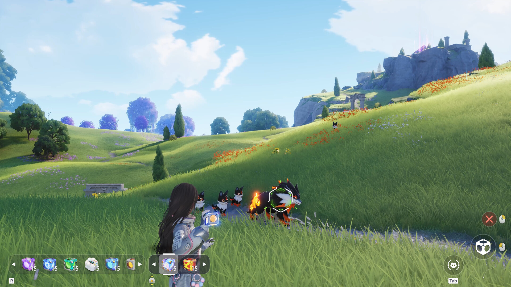
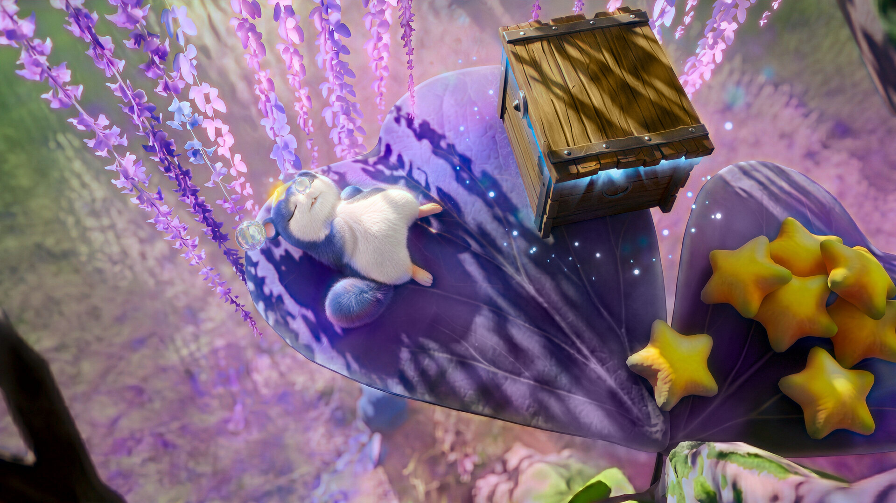
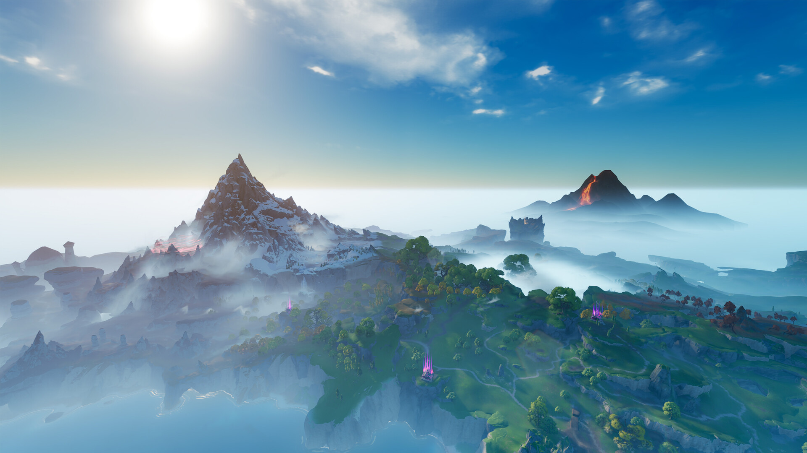
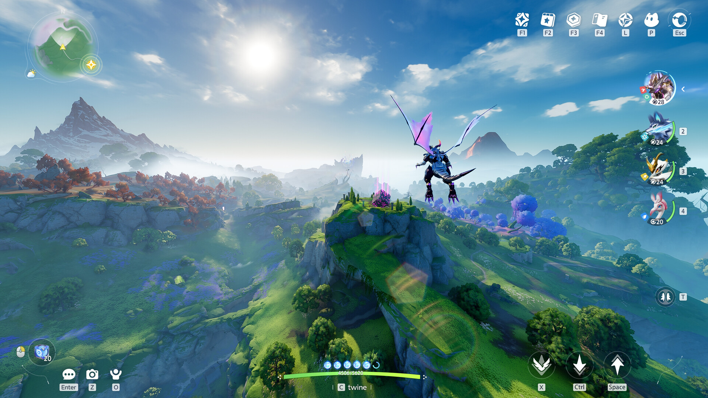
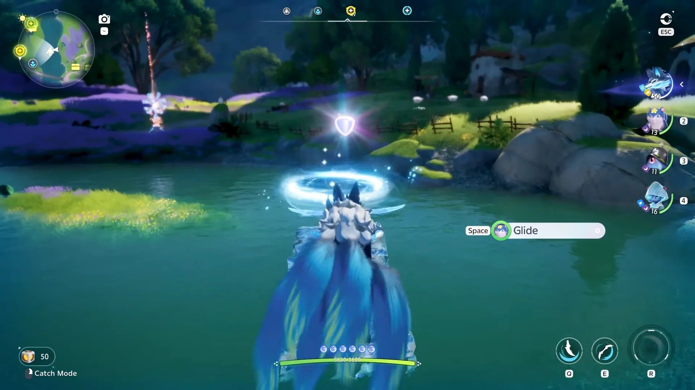

애니모 탐사 스킬 19종 총정리, 가속·이륙·은신 뭐가 있나
며칠째 애니모 공식 위키 도감을 들여다보다 보니, 개별 페이지 아래쪽에 있는 '탐사 스킬'이라는 낯선 칸까지 파고들게 됐는데요, 처음엔 이게 전투 스킬인 줄 알았다가 알고 보니 완전히 다른 개념이더라고요. 마침 오늘(2026년 9월 23일) 모바일판까지 정식 출시하면서 다들 본격적으로 필드를 누비실 시점이라, 오늘은 탐사 스킬 19종을 전부 표로 정리하고, 그중에서도 검색이 많은 가속·이륙·은신 세 가지는 조금 더 풀어서 설명해볼게요.
더불어 탐사 스킬이랑 헷갈리기 쉬운 이동 능력(비행·수영·등반)도 따로 챙겨봤어요. 이건 탐사 스킬이랑 아예 다른 칸이라, 같이 보면 도감 이해가 훨씬 쉬워질 거예요.

필드 곳곳을 이렇게 걸어서 돌아다니는데, 탐사 스킬이 있으면 못 가던 자리까지 갈 수 있다고 해요.
이미지: 스팀 스토어 페이지
탐사 스킬이 대체 뭔가요
탐사 스킬은 트와인 상태로 변신한 애니모가 필드에서 쓰는 이동·탐색 능력을 말해요. 전투 중에 쓰는 스킬이 아니라, 숨은 퀘스트를 찾거나 보물상자에 다가가거나 특정 지형을 건너갈 때 쓰는, 말 그대로 '탐사'용 능력이더라고요.
여기서 헷갈리면 안 되는 게 하나 있는데요, 애니모 도감에는 '홈 능력'이라는 완전히 다른 칸도 있어요. 홈 능력은 캠핑카 레벨업·파견처럼 홈 콘텐츠에 쓰이는 능력이라, 필드에서 쓰는 탐사 스킬과는 아예 별개의 항목이에요. 도감 페이지에서 두 칸을 헷갈리지 않게 조심하시는 게 좋아요.

이렇게 그냥 걸어서는 못 갈 것 같은 자리에 상자가 숨어 있기도 해요 — 이런 데 닿으려고 탐사 스킬이 필요한 거더라고요.
이미지: 스팀 스토어 페이지
탐사 스킬 19종, 전체를 표로 정리하면
탐사 스킬은 공식 위키 기준으로 총 19종이고, 스킬마다 그 능력을 가진 애니모가 정해져 있어요. 표로 한 번에 정리해볼게요.
| 탐사 스킬 | 공식 설명 | 보유 애니모 |
|---|---|---|
| 가속 | 가속 상태에 진입하여 급속으로 이동합니다. 체력을 지속적으로 소모합니다. | 탄멍멍·화르랑·이글랑·헬울프·서린댕·빙참랑·설휘랑·데굴굴·모터터·루나센·헬리온 |
| 이륙 | 비행 상태에 진입하여 지면 공격을 회피합니다. 피격 시 더 큰 피해를 받습니다. | 롬본이·럼펫이·플로라버드 |
| 개화 | 춤을 추면 발밑에 꽃이 피어납니다. | 플러터·왈츠페탈 |
| 팽창 | 팽창 상태에 진입하여 더 높이 뛸 수 있으며 공중에서 1회 대시할 수 있습니다. | 뭉게양 |
| 구름 부유 | 구름 속에서 자유롭게 떠다닐 수 있습니다. | 몽실양 |
| 뿌리 내리기 | 흙 속에 단단히 박혀 있다. | 삑삑초 |
| 조명 씨앗 | 조명 씨앗을 투척하여 씨앗이 땅에 떨어지면 주변 환경을 밝힙니다. | 위치햇그라스 |
| 땅파기 | 땅파기 상태에 진입하여 원거리 공격에 면역되지만, 지면 강타류 스킬에 피격 시 에어본 상태가 됩니다. 체력을 지속 소모합니다. | 싹크랩·풀크랩·스탈크랩·록키·크리스톤·크리스바인 |
| 반짝 잠행 | 분홍 안개에 가려진 은신 상태에 진입 | 반짝쵸·판타쵸 |
| 은신 | 은신 상태에 진입합니다. | 싹뚜기·서걱리퍼·볼트맨티스(썬더스퀵) |
| 하이 점프 | 1회 높이 점프합니다. | 라이트밍·볼트밍 |
| 돌격 | 일정 거리를 빠르게 전진합니다. | 엔젤멍·우스멍 |
| 탐지의 눈 | 특수한 탐지의 눈 상태에 진입하여 주위의 금속 물체와 은신 중인 애니모를 볼 수 있습니다. | 투구누니·아머누니 |
| 갈고리 | 화면 중앙 방향으로 팔을 뻗어 벽 또는 목표를 명중하면 자신을 그 위치로 끌어당깁니다. 스킬 버튼을 길게 누르면 조준 상태에 진입합니다. | 누니용사 |
| 듀얼 비전 | 특수한 듀얼 비전 상태에 진입하여 평소와 다른 풍경을 볼 수 있습니다. | 바이티·갸면뇽·갸고일·갸갑파이어 |
| 박치기 | 박치기를 사용하여 충격을 줍니다. | 드리미·푹자곰 |
| 가속 돌진 | 가속 돌진 상태에 진입하여 급속으로 이동하며 접촉하는 일부 장애물을 파괴합니다. 체력을 지속 소모합니다. | 마그라곤 |
| 발광 조명 | 머리 위에서 빛을 발산해 주변 환경을 밝힙니다. | 램프젤리·루미젤리·샹들라젤리 |
| 부유 버블 | 자신을 감싸는 커다란 거품을 만들어냅니다. | 버블버드·폼폼버드 |
표에서 보이듯 애니모 하나하나가 정해진 탐사 스킬을 갖고 있고, 목록상 한 애니모가 두 가지 탐사 스킬을 동시에 갖는 사례는 확인되지 않았어요. 참고로 썬더스퀵은 인게임에서 '볼트맨티스'로 개명됐고, 위치햇그라스는 '위치그라스'로 줄여 부르기 쉬운데 공식 표기는 위치햇그라스예요.
가속은 언제, 왜 중요한가요
가속은 가속 상태에 진입해 급속으로 이동하는 탐사 스킬이에요. 탄멍멍·화르랑·이글랑·헬울프·서린댕·빙참랑·설휘랑·데굴굴·모터터·루나센·헬리온까지 총 11종이나 갖고 있어서, 탐사 스킬 중에서는 보유 애니모가 가장 많아요.
공식 설명에 "체력을 지속적으로 소모합니다"라고 명시돼 있는 게 포인트인데요, 그냥 계속 켜두고 다닐 수 있는 능력이 아니라 상황을 봐가며 켜고 끄는 자원 관리형 이동기인 셈이에요. 넓은 필드를 가로질러야 할 때 요긴하되, 체력이 바닥나기 전에 다시 걷는 속도로 돌아오는 타이밍 조절이 필요하겠더라고요.

가속으로 가로질러야 할 만큼 넓은 필드예요 — 걸어서 건너기엔 확실히 시간이 걸리겠더라고요.
이미지: 스팀 스토어 페이지
이륙은 어떤 상황에 쓰나요
이륙은 비행 상태에 진입해 지면 공격을 회피하는 탐사 스킬이에요. 롬본이·럼펫이·플로라버드, 이렇게 세 종만 갖고 있어서 가속에 비하면 훨씬 희귀한 스킬이더라고요.
다만 공식 설명에 "피격 시 더 큰 피해를 받습니다"라는 단서가 같이 붙어 있어요. 그러니까 이륙은 무조건 안전한 회피기가 아니라, 지면 공격은 피해도 일단 피격되기만 하면 오히려 더 아픈 위험 부담이 있는 스킬인 거죠. 지면 공격이 잦은 구간에서는 쓸 만하지만, 피격 자체를 피하기 어려운 상황에선 오히려 조심해서 써야 할 것 같아요.

트와인 상태로 하늘을 나는 모습이에요 — 지면 공격은 피해도 맞으면 더 아프다는 걸 염두에 둬야겠더라고요.
이미지: 스팀 스토어 페이지
애니모 은신 스킬은 어떤 애니모가 갖고 있나요
탐사 스킬 중 은신을 가진 애니모는 싹뚜기·서걱리퍼·볼트맨티스(썬더스퀵), 이렇게 셋이에요. 공식 설명은 "은신 상태에 진입합니다"로 짧게 적혀 있는데, 딱 그 상태 자체가 스킬의 전부라 은신 중엔 적이나 다른 애니모의 시야에서 벗어나는 걸로 보여요.
특정 지형을 몰래 지나가거나 경계가 심한 구역에 접근할 때 요긴할 것 같은데, 정확히 어떤 조건에서 효과를 발휘하는지는 공식 설명 이상으로는 확인이 안 돼서, 여기까지만 정리해둘게요.
탐사 스킬 말고 이동 능력(비행·수영·등반)도 따로 있어요
탐사 스킬과 별개로, 도감에는 비행·수영·등반을 Lv.1~3까지 나눈 이동 능력 칸도 있어요. 항목 이름 자체가 한국어 위키에서도 영문 'Pathfinding'으로 남아 있는 걸 보면, 한국어 정식 절 이름은 아직 확정 전인 것 같더라고요.
이동 능력을 가진 애니모 36종을 표로 정리해봤어요.
| 애니모 | 이동 능력 | 탐사 스킬 |
|---|---|---|
| 스타라미 | 등반 Lv.1 · 비행 Lv.1 | - |
| 스타저드 | 비행 Lv.1 | - |
| 호루매기 | 비행 Lv.2 | - |
| 롬본이 | 비행 Lv.2 | 이륙 |
| 럼펫이 | 비행 Lv.3 | 이륙 |
| 연댕모리 | 수영 Lv.1 | - |
| 장꾸모리 | 수영 Lv.2 | - |
| 아이시우스 | 수영 Lv.2 | - |
| 연잎룡 | 수영 Lv.2 | - |
| 뭉게양 | 비행 Lv.1 | 팽창 |
| 몽실양 | 비행 Lv.2 | 구름 부유 |
| 쿨쿨양 | 비행 Lv.2 | - |
| 반짝쵸 | 비행 Lv.1 | 반짝 잠행 |
| 판타쵸 | 비행 Lv.2 | 반짝 잠행 |
| 래빗배트 | 비행 Lv.1 | - |
| 디텍배트 | 비행 Lv.2 | - |
| 허니버드 | 비행 Lv.1 | - |
| 플로라버드 | 비행 Lv.2 | 이륙 |
| 싹뚜기 | 비행 Lv.1 | 은신 |
| 서걱리퍼 | 비행 Lv.2 | 은신 |
| 라이트밍 | 등반 Lv.2 | 하이 점프 |
| 볼트밍 | 등반 Lv.3 | 하이 점프 |
| 펀치테일 | 등반 Lv.1 | - |
| 버스트테일 | 등반 Lv.2 | - |
| 수줍달 | 수영 Lv.1 | - |
| 보글달 | 수영 Lv.1 | - |
| 둥실달 | 수영 Lv.3 | - |
| 둔둔달 | 수영 Lv.1 | - |
| 엔젤멍 | 비행 Lv.1 | 돌격 |
| 우스멍 | 비행 Lv.3 | 돌격 |
| 갸고일 | 비행 Lv.2 | 듀얼 비전 |
| 갸갑파이어 | 비행 Lv.2 | 듀얼 비전 |
| 침니앤트 | 비행 Lv.1 | - |
| 버블버드 | 비행 Lv.1 · 수영 Lv.1 | 부유 버블 |
| 폼폼버드 | 비행 Lv.3 · 수영 Lv.2 | 부유 버블 |
| 볼트맨티스(썬더스퀵) | 비행 Lv.2 | 은신 |
등급별로는 등반 Lv.1 2종·Lv.2 2종·Lv.3 1종, 비행 Lv.1 10종·Lv.2 11종·Lv.3 3종, 수영 Lv.1 5종·Lv.2 4종·Lv.3 1종으로 나뉘고, Lv.3까지 찍은 애니모는 럼펫이(비행)·볼트밍(등반)·둥실달(수영)·우스멍(비행)·폼폼버드(비행), 이렇게 다섯 종뿐이더라고요.

강물을 헤엄쳐 건너는 장면이에요 — 04번 사진(비행)과 달리 물 위를 이동하는 능력을 보여주는 화면이에요.
이미지: RPGFan 게임 스크린샷 갤러리
애니모 탐사 스킬 자주 묻는 질문
Q. 은신처럼 보이는 '반짝 잠행'도 은신 스킬인가요?
이름이나 느낌은 비슷하지만 공식 목록상으로는 별개의 탐사 스킬이에요. 은신은 싹뚜기·서걱리퍼·볼트맨티스(썬더스퀵)이 갖고 있고, 반짝 잠행은 반짝쵸·판타쵸가 따로 갖고 있어요.
Q. 탐사 스킬을 쓰면 체력이 소모되나요?
전부 그런 건 아니고 일부만요. 가속은 공식 설명에 "체력을 지속적으로 소모합니다"가, 땅파기·가속 돌진은 "체력을 지속 소모합니다"가 명시돼 있는 반면, 이륙이나 은신처럼 소모 언급이 없는 스킬도 있어요.
Q. 탐사 스킬을 가진 애니모는 이동 능력도 같이 갖고 있나요?
상당수가 그래요. 이동 능력표를 보면 뭉게양(비행 Lv.1+팽창)·롬본이(비행 Lv.2+이륙)·버블버드(비행 Lv.1·수영 Lv.1+부유 버블)처럼, 탐사 스킬과 비행·수영 레벨을 함께 가진 애니모가 여럿 있어요.
애니모 탐사 스킬 19종 정리
정리하면 탐사 스킬은 총 19종이고, 그중 가속이 11종으로 가장 흔하고 이륙·은신처럼 세 종 안팎만 가진 희귀 스킬도 있었어요. 탐사 스킬과 별개로 비행·수영·등반 이동 능력까지 챙겨두면, 도감을 보는 눈이 한결 편해질 거예요. 저도 이번에 표로 정리하면서 필드 탐사가 훨씬 재밌어졌는데, 여러분도 도감 들여다보실 때 참고하시면 좋을 것 같아요.
✔ 애니모 같이 보기 좋은 내용
· 애니모 9월 23일 업데이트 홀로그램 협동전 정리, 점검 시간부터 참여 조건까지
· 애니모 진화 조건 총정리, 분기 진화 16계열 갈리는 법과 진화석 얻는 법
· 애니모 모바일 출시일 D-1, PC 버전이랑 뭐가 다른지 캐릭터 연동까지 정리
참고한 곳
· 애니모 공식 위키(도감)
· 애니모 공식 위키 — 이글랑 페이지(가속 탐사 스킬)
· 애니모 공식 사이트